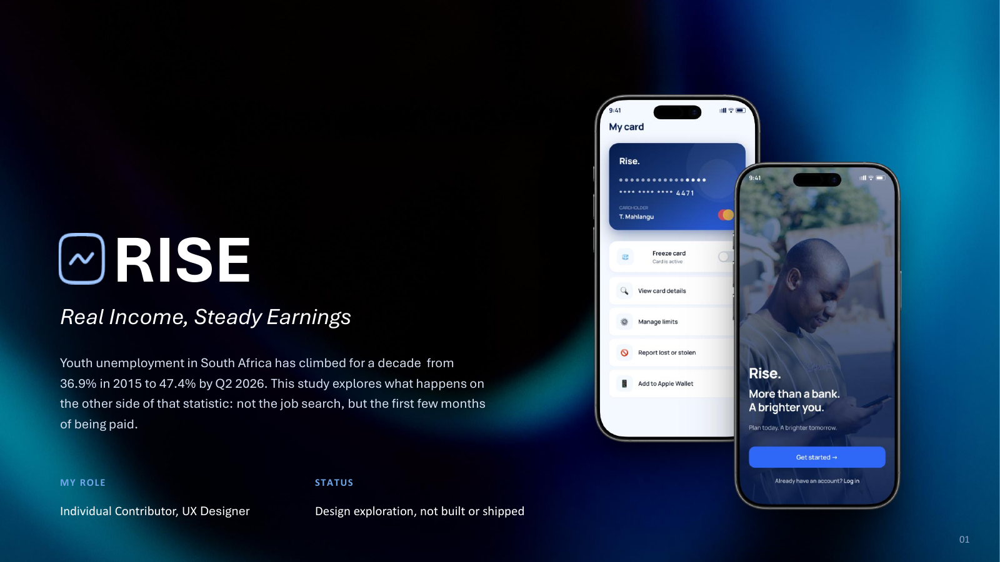
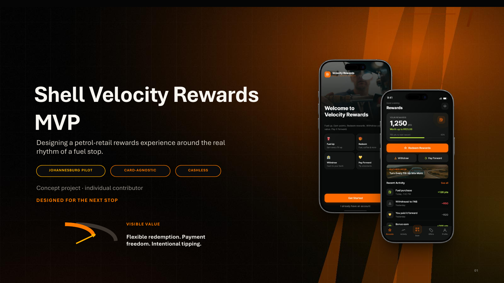
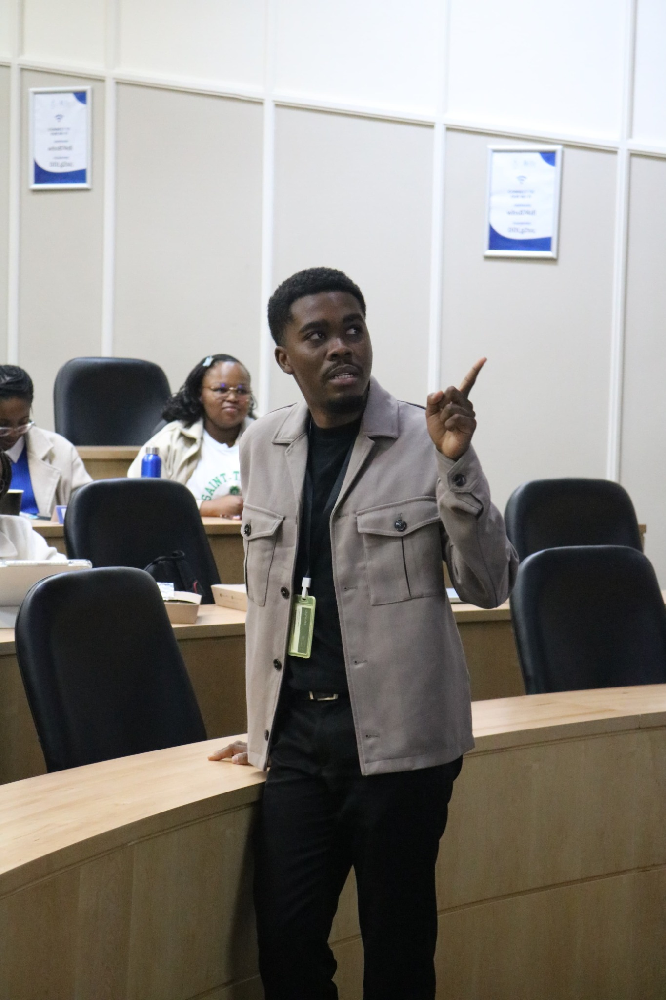

Pattern recognition
I am trained to look for relationships, outliers and recurring signals before jumping to a conclusion.
Turning evidence into clearer products, services and decisions.
I combine UX research and product thinking with a BCom in Statistics. That quantitative foundation helps me question assumptions, recognise patterns and make design decisions with stronger evidence behind them.
Open a case study to see the problem framing, research, synthesis, decisions, rejected alternatives, UI and what I would test next.

Uncovering why API discovery, reuse and collaboration were breaking down inside a Tier-1 African banking ecosystem. The research showed why tooling alone could not solve it.

Designing financial breathing room for young South Africans navigating the first months after a first paycheck.

Reimagining fuel rewards around visible value, flexible redemption, payment freedom and intentional digital tipping.
Systems thinking helps me look beyond a screen and into the relationships, constraints, incentives and feedback loops around it.

Before UX, I completed a BCom in Statistics at Nelson Mandela University. Studying quantitative analysis and time series strengthened the way I interrogate evidence, recognise patterns and challenge assumptions.
UX gave that analytical instinct a human focus. Today I combine qualitative research with quantitative reasoning to understand both what people experience and what the evidence is actually telling us.
Interview protocols, stakeholder interviews, affinity mapping and synthesis.
Flows, interaction design, prototyping, design rationale and systems.
Turning evidence and business context into experience direction.
Statistics, structured analysis and measurement framing.
I do not see data and human-centred design as opposites. My strongest work happens when qualitative insight and quantitative reasoning inform each other.
I am trained to look for relationships, outliers and recurring signals before jumping to a conclusion.
I frame assumptions as things to test. Research, data and context should earn the decision.
I think beyond whether an interface works and ask how success should be defined and measured over time.
I’m open to UX design, product design, UX research and design strategy opportunities.